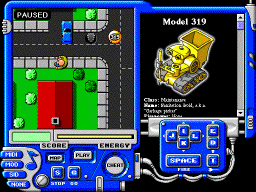
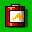
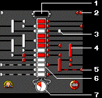

 While playing, you move the main character around with the I, J, K and L keys and fire with SPACE. The background will scroll and follow you along. You can also climb in and out of the sewers (see below).
The rounded objects with numbers on them are symbolic representations of droids. Your enemies. The bad guys. All of them have to be killed. You do that by shooting at them or crushing them with brute force. Of course, they can do the same to you. (Otherwise this wouldn't be any fun, would it?)
You have a force field which protects you from direct physical injury, but all collisions wear down your energy supply. So does shooting. When it's all gone, your power pack has a tendency to explode and, well, kill you rather violently, so try not to let that happen.
At any time during the game you can press the S key to pause it. In that state,
clicking on any droid (or yourself) will bring up statistics about it in the
information window. You get to see, for example, what strength, shields and
firepower it is equipped with. Pressing G starts the game again.
|  | Battery. Aside from being worth 25 points, it replenishes part of your energy. |
| Manhole. Enter the sewers by pressing D. | |
| Exit. Go up again by pressing E. |
The way you acquire better strength, shields and firepower is by hacking into droids and taking control of them. Then you can ride the droid and get access to all its capabilities. And if you run out of energy, only the droid gets killed. You'll be safe ... for a while.
All droids have a neural network processor which works as a brain. Leading out from it, sending directives to the body, is a neural brain stem. This happens to be very sensitive to outside influence. By feeding electrical impulses through the right cables, you can block out the droid's processor and gain control over all motoric parts -- wheels, limbs and weapons. But droids also have a built-in defense which will try to counteract your tampering by sending impulses of its own into the brain stem. The better the operating system, the tougher the defense.
To initiate a takeover attempt, hold down the T key and get in physical contact with a droid. Then you will be presented with the following screen:
|  |
|
Move your impulse generators up and down. When they are in a proper position, press SPACE to make them fire a signal. (It may take a couple of tries before you get the hang of it.)
If you lose, your power source or the droid you are presently in control of will burn out and explode. If you win, on the other hand, the other droid is then your property, and instead of your character on the screen you will see a representation of that droid, but colored white. Now, in addition to its strength, shields and firepower you will also have access to its operating system, which may make it easier to take over other droids, in turn.
|
Model 100
Class: HouseholdName: Home surveillance droid, a.k.a. "Door stop" Firepower: None Armor: Level 1, plastic Strength: Level 1 Natural speed: 4 km/h Operating System: CP/M |
There are five different droid classes: household (red), maintenance (yellow), construction (green), law enforcement (blue) and military (black). Household droids are typically the dumbest and weakest, with the rest ranging in that order up to the military droids, which are the smartest and most powerful. The number identifies the specific droid model -- in this case the "Model 100, home surveillance droid."
The level values of Firepower and Strength determine the offensive capabilities of the droid, for shooting and bumping respectively. Similarly, the Armor value determines its defensive capability. A level 3 armor will protect against firepower up to level 3, and so on. (You can also hear, when you are shooting at a robot, if your bullets just bounce off. Then there's a "plink" sound instead of a crash.)
Natural speed is how fast the droid can move on its own.
Clicking on the "OK" button sends you back to the game screen.